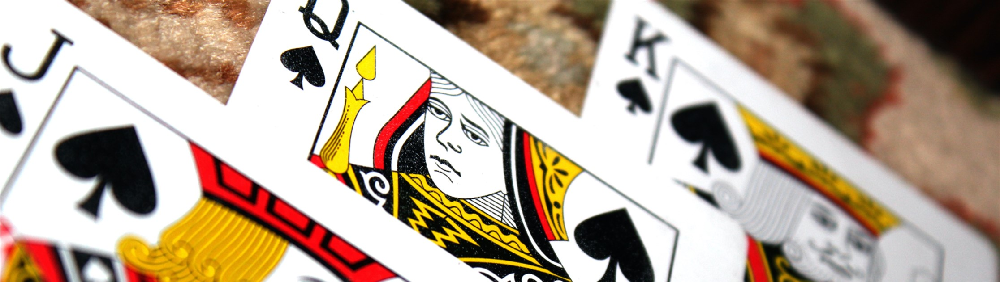

Whist
This is a project in Java that simulates a four player game of whist. The game is played in command line against the computer with a computer as a partner. The computer has two difficultly settings. The first is a basic strategy. It works like this
- If first player in the trick, pick largest card in hand, if more than one pick at random
- If partner is winning play lowest card of leading suit
- If partner in not winning or has not played compare to current best card play higher if possible, if not play lowest card in leading suit. If it can't play any from the leading suit play trump and if none of these are possible play the lowest card possible
The second is an advanced strategy
- It has a very similar set up to the first e.g. if I can't play a card from the leading suit try to play a trump card. If it can't play that play the lowest card possible
- However this strategy also implements card counting, this results in the strategy only playing high cards if the card can't be beaten e.g. can play a ten of spades if the jack, queen, king, ace of spades have already be played
Follow link to find video explaining how whist is played and terminology: How to play Whist
the project can be found as Github